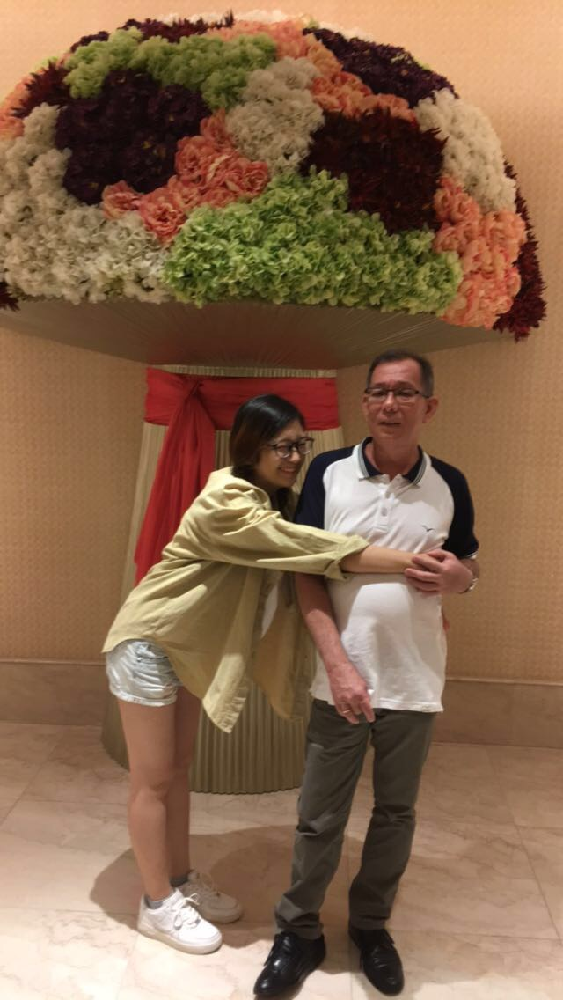

RODEL

Name: Rodolfo Alindog Encabo
Birthday: August 6, 1958
He has 7 siblings, 2 brothers and 5 sisters. His youngest brother left them just last April due to several body complications. He finished his studies at the Philippine School of Business Administration with a degree in BS Economics.
He is currently working at Bangko Sentral ng Pilipinas for more than 25 years now. He worked his way up starting as a messenger at the office. We are living a stable and comfortable life thanks to him.
BACK
|